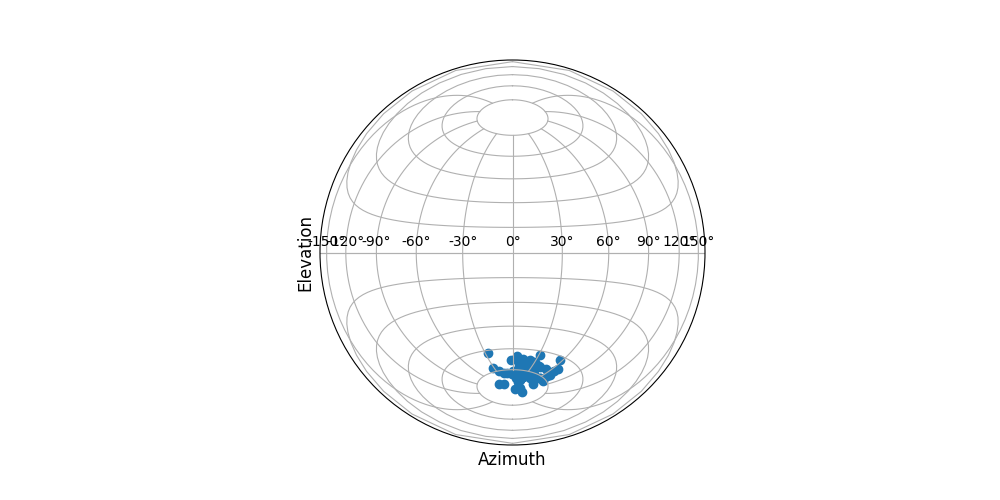
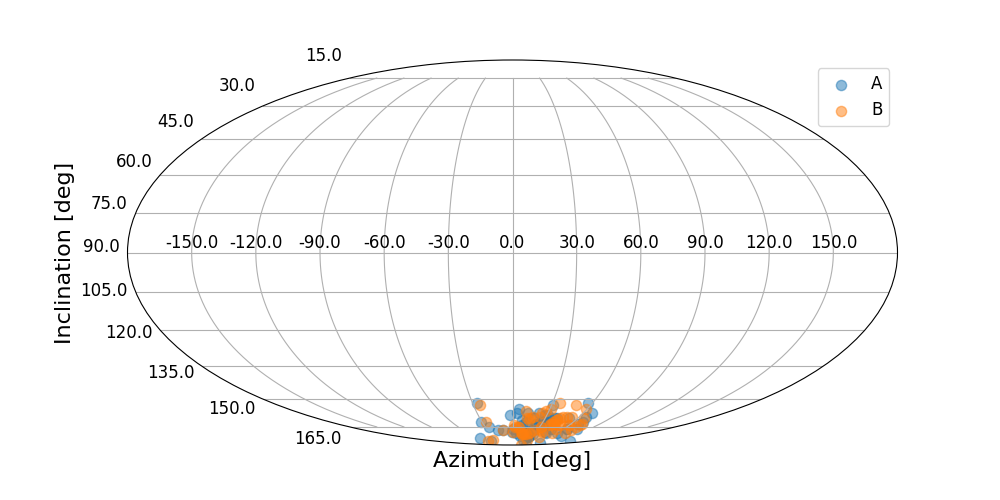
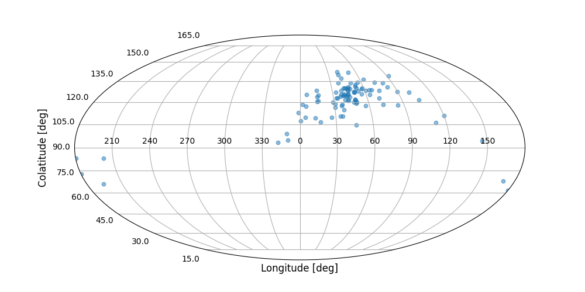
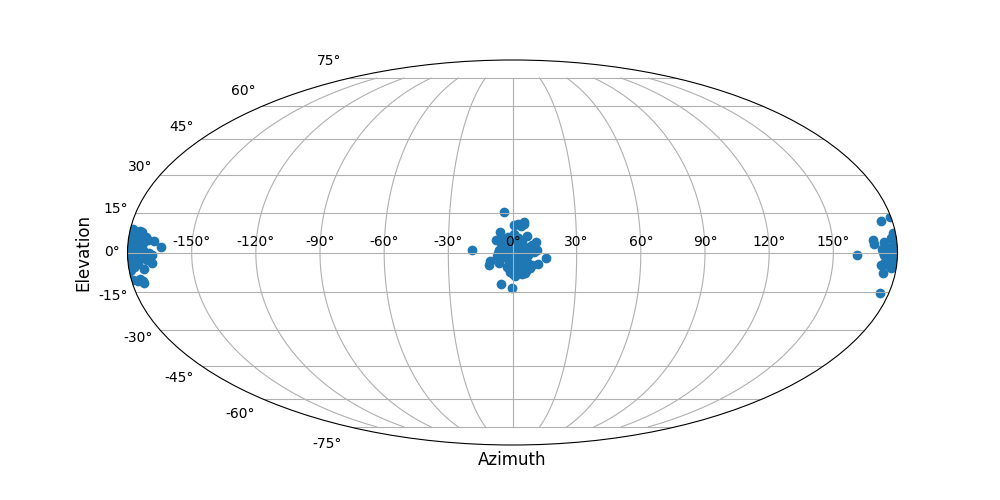

Examples
sphstat implements includes several modules whose names are pretty
self-explanatory. These are:
descriptives: Functions for descriptive statistics on spherical datadistributions: Functions for generating data from different spherical distributionssinglesample: Functions for single-sample tests on spherical datatwosample: Functions for inferential staticts on two or more samplesmodelling: Functions for cross-correlation, regression, and temporal analysisutils: Utility functions used by other modules
Coordinate system
sphstat uses the polar (Colatitude/Longitude) coortinates with
\(0< \theta< \pi\) defined from the z-axis and \(0< \phi< 2\pi\) as shown
in the figure below.

The following examples demonstrate the usage of sphstat.
Importing sphstat
After installation, sphstat is imported just like any other Python
package by:
import sphstat
Reading and converting a sample
Presently only Excel files are accepted as input. Each worksheet should contain a single sample. Data can either be in degrees or in radians. Data in three different spherical coordinate systems can be processed. The default system is polar, but longitude/latitute (i.e. ‘lonlat’) and declination/inclination (i.e.’decinc’) can also be handled. While some functions require data in polar coordinates, some others will require a Cartesian representation. Necessary conversions need to be made. The following example shows reading data in the second worksheet, represented in declination/inclination form (e.g. Dec. in first column and Inc. in the second) in radians and converted to first to polar coordinates and then to Cartesian form:
from sphstat.utils import readsample, convert, polartocart
sample = readsample('/PATH/TO/DATA/mydata.xlsx', wsindex=1, typ='rad')
samplepol = convert(sample, 'decinc')
samplecart = polartocart(samplepol)
Descriptive statistics of spherical data
The descriptive statistics of spherical data is obtained by using the
resultants() function from
from sphstat.descriptives import resultants
from sphstat.utils import prettyprintdict
r = resultants(samplecart)
prettyprintdict(r)
Directional Cosines: [ 0.22649571 -0.07068299 0.97144408]
Resultant Vector: [ 8.0846443 -2.52299178 34.67518128]
Resultant Length: 35.694469568249374
Mean Direction: (0.23955319922943338, -0.30249497353817606)
Mean Resultant Length: 0.9915130435624826
Another useful function is mediandir() which calculated the median
direction as well as the parameters for (1-alpha)% confidence cone:
from sphstat.descriptives import mediandir
medi, ccone, success, W = mediandir(samplecart, ciflag=True, alpha=0.01)
Plotting a sample
sphstat uses either one of Mollweide or Lambert projections to
display data.
from sphstat.plotting import plotdata
plotdata(sample, proj='lambert')
plotdata(sample, proj='mollweide')
will produce the following scatterplots, respectively.
Lambert projection:

Mollweide projection:

Multiple data plot
Two or more data can also be overlaid. plotdatalist() will produce
the necessary legend for the scatterplot:
from sphstat.plotting import plotdatalist
samplelist = [sampleA, sampleB]
plotdatalist(samplelist, labels=['A', 'B'], proj='mollweide')

Generating samples from spherical distributions
sphstat.distributions provides functions that can generate vectors
randomly drawn from uniform, Fisher, Kent and Watson distributions
from sphstat.distributions import kent
mu0 = np.array([0., 1., 0.])
sample = kent(100, 50, 20, np.array([1., 1., 1.]), mu0)
samplerad = carttopolar(sample)
plotdata(samplerad, proj='mollweide')

from sphstat.distributions import watson
samplewatson = watson(100, lamb=0., mu=1., nu=0., kappa=50)
samplerad = carttopolar(samplewatson)
splt.plotdata(samplerad, proj='mollweide')

Statistics on a single sample
sphstat.singlesample contains different tests and parameter
estimators for a single sample. For example, testing whether a sample
comes from a uniform distribution:
from sphstat.singlesample import isuniform
res = isuniform(samplecart, alpha=0.05)
prettyprintdict(res)
teststat: 86.04615038397233
crange: 7.814727903251179
testresult: False
…or Fisher distribution (which provides the results of three different tests for Fisherianness):
from sphstat.singlesample import isfisher
res = isfisher(samplecart, alpha=0.05)
prettyprintdict(res)
colatitute: {'stat': 0.9137353833832544, 'crange': 1.094, 'H0': True}
longitude: {'stat': 1.5941243439349297, 'crange': 1.207, 'H0': False}
twovariable: {'stat': 0.7669521350409133, 'crange': 0.895, 'H0': True}
H0: False
alpha: 0.05
Parameter estimation functions output multiple values. For example,
fisherparams() will output mean direction, concentration parameters,
semi-vertical angle, and (1-alpha)% CI for the concentration parameter:
from sphstat.singlesample import fisherparams
mdir, kappa, thetaalpha, cikappa = fisherparams(samplecart, alpha=0.05)
There are also functions to test the sample statistics against hypothethical values. For example, whether the population concentration parameter is a given value can be tested:
from sphstat.singlesample import kappatest
res = kappatest(samplecart, kappa0 = 100)
prettyprintdict(res)
R: 30.765364522847698
cvaltup: (32.781120236887155, 32.559979744967514)
testresult: False
Statistics on two or more samples
The tests and methods in sphstat.twosample provides tests and
methods for the analysis and comparison of multiple vectorial samples on
the unit sphere. For example, in the following example, three samples
are tested for a common mean direction.
from sphstat.twosample import iscommonmean
from sphstat.utils import polartocart, convert
sample1rad = convert(sample1, 'decinc')
sample2rad = convert(sample2, 'decinc')
sample3rad = convert(sample3, 'decinc')
slist = [sample1rad, sample2rad, sample3rad] #, sample3, sample4]
slistcart = []
for s in slist:
slistcart.append(polartocart(s))
res = iscommonmean(slistcart, alpha=0.05)
prettyprintdict(res)
Gr: 9.543041349403211
cval: 9.487729036781154
testresult: False
There are also more specific tests if, for example, it is known that the underlying distributions are Fisher, a multiple comparison akin to running multiple t-tests on linear data is given by
from sphstat.twosample import isfishercommonmean
res = isfishercommonmean(slistcart)
prettyprintdict(res)
Z: 0.9921425881206186
z0: 0.992171530518573
res: True
Similarly, a test similar to Levene’s test for testing whether multiple samples have the same concentration parameter is:
from sphstat.twosample import isfishercommonkappa
res = isfishercommonkappa(slistcart)
prettyprintditc(res)
Z: 4.853124235595307
cval: 5.991464547107979
df: 2
testresult: True
Correlation, regression, temporal association
Functions in sphstat.modelling implement functionality to calculate
correlations, regression and time-series analysis on spherical data. For
example:
from sphstat.modelling import xcorrrandomsamples
res = xcorrrandomsamples(sampcart1, sampcart2, 10000, htype='!=', alpha=0.05)
prettyprintdict(res)
rhohat: 0.8512942745968715
std: 0.03355675208163771
cval: (-0.0661660798549282, -0.12290819705298231)
ci: (0.7855242490787221, 0.9170643001150208)
testresult: True
indicates that two samples are correlated with a correlation coefficient of 0.851 with the 95% confidence interval also given.
In order to check if there is any serial association between time-ordered observations in a sample:
from sphstat.modelling import isn
res = isnotseriallyassociated(sampcart, alpha=0.05)
prettyprintdict(res)
Sstar: 2.504563022268227
cval: 1.6448536269514722
testresult: False
indicating that the observations are not serially associated at \(\alpha=0.05\)
level.
Limitations
In its present version sphstat…
…mostly works on larger (i.e.
n >= 25) sample sizes. While some bootstrapped methods (e.g. jackknife and permutation tests) are implemented not all are.…does not implement tests for axial and girdle data. A future version might include these tests
…only implements the tests and methods given in Fisher, Lewis and Embleton [1] which is the most frequently used catalogue of tests and methods for spherical data. However, more recent methods exist, such as those in Ley and Verdebout [2]. These methods are planned to be incorporated into a future version.
References
[1] Fisher, N. I., Lewis, T., & Embleton, B. J. (1993). Statistical analysis of spherical data. Cambridge University Press.
[2] Ley, C., & Verdebout, T. (2017). Modern directional statistics. Chapman and Hall/CRC.